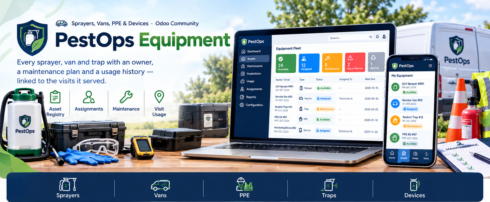
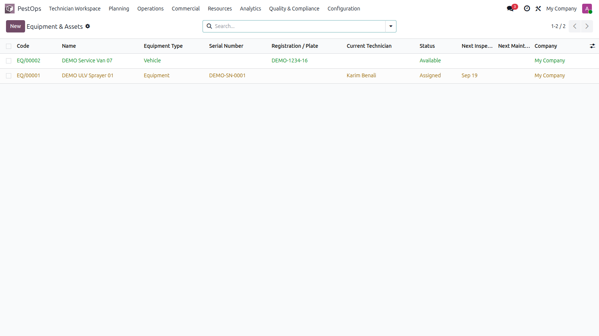
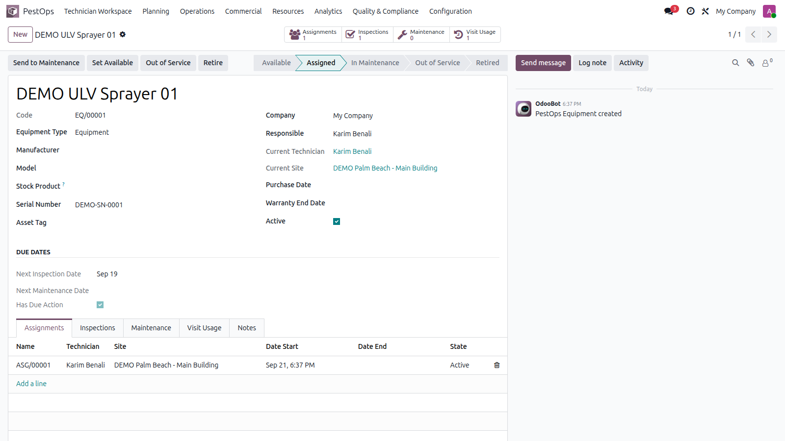
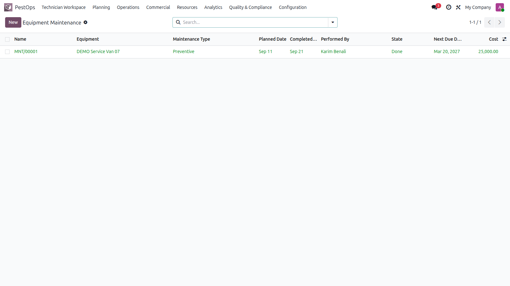

🚐 Sprayers, Vans, PPE & Devices · Odoo Community
🧰 Asset Registry 👤 Assignments 🔧 Maintenance 📍 Visit Usage


Equipment fleet with status and due actions.
Non-consumable field assets live here with serials, warranties, assignments, inspections and costs — so breakdowns stop surprising your dispatchers.
💨 ULV Sprayers 🚚 Service Vans 🦺 PPE Kits 📡 Monitoring Devices
Register each asset with serial number (unique per company), asset tag, plate, manufacturer, model, purchase and warranty dates. Assign it to a technician and site — status flips automatically, and the system refuses double assignments or assigning broken equipment.

Equipment sheet with assignments, inspections, maintenance and usage.
Schedule inspections (pass/fail with findings) and maintenance (preventive, corrective, calibration) with next-due computation, costs and vendors. Due items raise automatic activities. Log usage per visit so proofs and analytics know exactly which gear did the job.

Maintenance operations with types, costs and states.
| Odoo Version | Community |
|---|---|
| License | LGPL-3 |
| Module Type | Extension (requires PestOps Core) |
| Dependencies | pestops_core, mail, stock |
| External Services | None required |
📧 imazighenapps@gmail.com — fast response 🔄 Free Updates